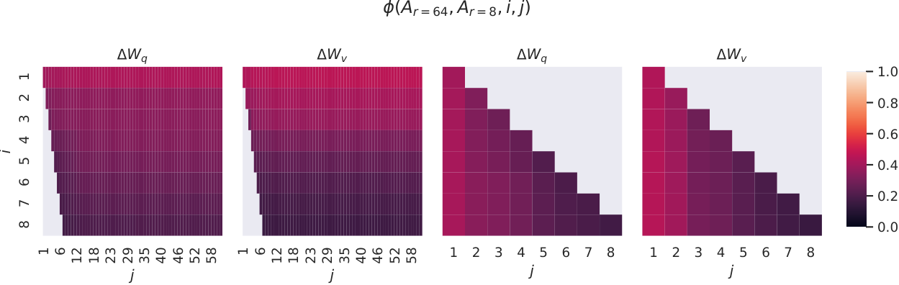

第 14 章 · 参数高效微调：LoRA 家族
全参微调 70B 模型需要约 1 TB 级显存，而 LoRA 把可训练参数压到千分之几、把 7B 模型的指令微调塞进一张消费级显卡。本章给出参数高效微调（PEFT）的方法全景，从 LoRA 的低秩分解推导讲到 QLoRA 的 NF4 量化三件套，再给出超参经验表、合并与多 LoRA 服务的部署路径，以及"什么时候 LoRA 反而不如全参"的实证边界。
1. 为什么需要参数高效微调：先算一笔显存账
第 12 章已经说明，SFT 在数学上就是换一个数据分布做极大似然。既然如此，为什么不全参微调（Full Fine-Tuning）？答案是一笔显存账。用 AdamW 混合精度训练一个 \(N\) 参数模型，显存里至少躺着四样东西：bf16 权重（2 字节/参数）、bf16 梯度（2 字节/参数）、Adam 的一阶与二阶动量（fp32，8 字节/参数），以及 fp32 主权重副本（4 字节/参数）——合计约 16 字节/参数。于是 7B 模型全参微调约 112 GB，13B 约 208 GB，70B 约 1.1 TB：即使不考虑激活值，也远超单机八卡 80G A100 的容量，必须叠加 ZeRO-3/张量并行（第 43 章）才可能放下。
参数高效微调（Parameter-Efficient Fine-Tuning, PEFT）的思路是反着来的：冻结预训练权重，只训练一个小得多的"增量模块"。冻结意味着权重不需要梯度、不需要优化器状态，显存大头只剩只读的权重本体；可训练参数从 \(N\) 降到 \(N\) 的 0.1%~1%，优化器状态可以忽略不计。代价是表达力受限——增量模块的函数空间只是全参数空间的一个小子集。这个 trade-off 在大多数后训练任务上是划算的：指令微调、风格适配、领域对齐都是"在既有能力上做小幅调制"，而第 8 节会给出它失效的边界。本章以 LoRA 家族为主线，因为它兼具"训练后可合并、推理零开销、可插拔"三个工程上决定性的优点。
PEFT 省的是优化器状态与梯度的显存，不是前向计算量：LoRA 训练时模型照样对全库参数做前向，FLOPs 与全参几乎相同（还多了 BA 的两次小矩阵乘）。所以"LoRA 让训练更快"只在显存允许更大 batch、减少卡间通信的意义上成立。把"参数少"当成"训练快"是常见的预期错位。
本节小结：全参微调 16 字节/参数的显存账把 13B 以上的全参训练推向多机；PEFT 冻结底座、只训小增量，用一点表达力换一个数量级的显存。
2. PEFT 方法全景：Addition、Reparameterization 与 Selection 三大门派
LoRA 不是唯一的 PEFT 方法。按"增量以什么形式存在"，主流方法可以分成三派，理解分类比记住方法名更重要——它直接决定推理时部署方式与可组合性：
| 门派 | 代表方法 | 增量形式 | 推理延迟 | 核心优 / 劣 |
|---|---|---|---|---|
| Addition-based（加模块） | Adapter（Houlsby et al., 2019）、Prefix-Tuning（Li & Liang, 2021）、Prompt-Tuning（Lester et al., 2021） | 在层间插入新模块 / 在 KV 前拼可学习前缀 / 只训 embedding 前缀 | Adapter 增加串行延迟；Prefix 占用 KV cache | 优：参数极省，Prefix-Tuning 可控文本生成；劣：串行插入破坏推理图优化，KV 前缀吃上下文预算 |
| Reparameterization（改写权重） | LoRA 及其变体（rsLoRA、DoRA、piSSA 等） | \(\Delta W = BA\) 低秩增量，训练时可与原权重合并 | 合并后零额外延迟 | 优：部署友好、可插拔、生态最成熟；劣：低秩约束上限 |
| Selection（选子集） | BitFit（只训 bias）、IA3（按通道缩放 K/V/FFN） | 挑选极小参数子集或逐通道向量 | 零额外延迟 | 优：实现最简单、参数最少；劣：表达力最弱，适合轻量适配 |
三派的分野在部署时最明显。Adapter 串行插在残差通路里，服务化时要么接受额外延迟、要么重新融合算子；Prefix/Prompt-Tuning 的增量存在于激活空间，与 KV cache 管理深度耦合；只有 LoRA 系的训练产物 \(\Delta W\) 可以在部署前一次性加回原权重（第 7 节），推理侧完全无感。这也是为什么 2023 年之后开源社区的后训练管线（LLaMA-Factory、TRL、axolotl 等）几乎默认以 LoRA/QLoRA 为 PEFT 标准件。
本节小结：PEFT 三大门派的本质差异是增量的存在形式；LoRA 赢在"可合并、零推理开销、可插拔"，成为事实标准。
3. LoRA 核心推导：低秩增量、初始化与缩放
LoRA（Low-Rank Adaptation, Hu et al., 2021）的核心假设是：微调引起的权重变化 \(\Delta W\) 具有远低于原权重的内在秩（intrinsic rank）。于是不做非结构化的全参更新，而是把 \(\Delta W\) 参数化为两个小矩阵的乘积：
\[ W = W_0 + \Delta W = W_0 + \frac{\alpha}{r}\, B A \]其中 \(W_0 \in \mathbb{R}^{d \times k}\) 是冻结的预训练权重，\(B \in \mathbb{R}^{d \times r}\)、\(A \in \mathbb{R}^{r \times k}\)，秩 \(r \ll \min(d, k)\)（典型 8~64）。前向计算不变更主干，只在原权重旁边挂一条低秩旁路：
\[ h = W_0\,x + \frac{\alpha}{r}\, B(A\,x) \]可训练参数量从 \(d \times k\) 降到 \(r(d+k)\)。以 4096×4096 的投影矩阵、\(r=16\) 为例：全参 1678 万，LoRA 仅 \(16 \times 8192 = 13\) 万，约 0.8%。更重要的是梯度与动量只对 \(A, B\) 存在，显存账从"16 字节/参数 × 全库"变成"16 字节/参数 × 0.x% 全库 + 2 字节/参数 × 全库（只读权重）"。
初始化是 LoRA 数学里唯一"玄学"的部分，但其实很干净：\(A\) 用高斯分布初始化，\(B\) 初始化为零。这样训练起点处 \(BA = 0\)，增量为零、模型行为与 base 模型完全一致——SFT 从 base 的能力出发平滑起步，不存在"第一 step 输出被随机扰动打碎"的问题。反过来（\(A=0, B\sim N\)）在数学上等价（乘积仍为零），但梯度 \(\partial \mathcal{L}/\partial B\) 在 \(A=0\) 时恒为零、\(B\) 永远学不动，所以方向不能颠倒；两个都置零则破坏对称性的同时没有任何好处。\(A\) 的高斯尺度也不必纠结，原论文用一般初始化即可，梯度会迅速把 \(A\) 带到合理区域。
缩放因子 \(\alpha/r\) 的含义：\(\Delta W\) 的实际幅度 = \(BA\) 的幅度乘以 \(\alpha/r\)。固定 \(\alpha\) 调 \(r\) 时，增大 \(r\) 不会让增量幅度失控（\(BA\) 的期望范数近似不随 \(r\) 爆炸，但每列的归一化结构变化），这是 \(\alpha/r\) 设计的初衷——让"调秩"与"调幅度"解耦。工程上更实用的理解是：\(\alpha/r\) 等效于 \(B\) 的学习率放大器，调 \(\alpha\) 与调 lr 高度冗余，保持 \(\alpha = 2r\)（即缩放 2）这类固定比例、把搜索预算留给 lr 和 \(r\)，是社区最省事的默认。rsLoRA（第 6 节）正是挑战了 \(\alpha/r\) 这个选择，主张 \(\alpha/\sqrt{r}\) 在大秩下更稳定。

加载 PEFT 模型后打印 trainable_params / total_params：7B 模型、\(r=16\)、全部 7 个投影层时约 0.4%~0.6%（4000 万左右）是健康区间；如果打出 2% 以上，多半是 target_modules 误把 embedding/lm_head 包了进去；如果只有 0.1% 以下，检查是不是只挂了 q_proj。参数量对不上预期，是配置错误的最早信号。
本节小结：LoRA 把微调约束在低秩增量 \(\frac{\alpha}{r}BA\) 上；B 零初始化保证从 base 平滑起步，\(\alpha/r\) 解耦秩与幅度，可训练参数只占全库千分之几。
4. LoRA 放在哪些层：target_modules 的选择经验
LoRA 只挂在部分线性层上，挂在哪是仅次于秩的第二大超参。原论文在 GPT-3 上比较后发现：固定参数预算时，把 LoRA 同时挂到注意力的四个投影与 FFN，优于只挂注意力；只调 \(q_v\)（当时社区流行做法）在同等预算下最弱。对 LLaMA/Qwen 系的现代模型，经验可以总结成一张表：
| target_modules 配置 | 典型参数占比（7B, r=16） | 适用场景 | 经验判断 |
|---|---|---|---|
| 仅 q_proj、v_proj | 约 0.15% | 显存极限压榨、轻量风格适配 | 预算最省但上限低，现代模型上不推荐作为默认 |
| 注意力四投影 q/k/v/o | 约 0.3% | 小数据指令跟随、分类头适配 | 稳定保守；FFN 不动，知识注入能力弱 |
| 四投影 + gate/up/down（全 7 层，推荐默认） | 约 0.5%~0.6% | 指令微调、领域对齐、多轮对话 | QLoRA 论文推荐配置；知识/技能学习明显好于只挂注意力 |
| 上述 + embed_tokens / lm_head | 约 1%~2%（视词表） | 扩词表（新语言/新特殊 token） | 仅当确有新 token 需要训练时使用，否则拖慢且易过拟合 |
两条补充经验。第一，秩与层的组合比单独调秩更值：预算固定时，"更多层 × 小秩"通常优于"更少层 × 大秩"，因为不同层需要的子空间方向差异大而各自所需的秩并不高。第二，秩的需求与任务的知识密度正相关：格式/风格/输出规范类适配 r=8~16 足够；领域术语与知识类任务建议 r=32~64 起步并配合 FFN 层；r 超过 128 后收益迅速递减，问题往往从"容量不足"切换为"数据不足"。
\(r \to \min(d,k)\) 时 LoRA 在容量上逼近全参，但优化动力学并不逼近：全参微调每个权重有自己的学习轨迹，而 LoRA 仍通过 BA 的乘积结构耦合更新（第 6 节的 LoRA+ 正是针对这一点）。实证上大秩 LoRA 与全参在数学/代码等大漂移任务上仍有显著差距（Biderman et al., 2024，第 8 节）。把"加秩"当"加质量"的直觉，在 r 超过 64 后基本失效。
本节小结：target_modules 的默认答案是全部 7 个投影层；层覆盖优先于秩大小，秩的需求跟任务知识密度走，r 大于 64 后收益急剧递减。
5. QLoRA：在 4-bit 底座上训练 LoRA
QLoRA（Dettmers et al., 2023）回答的问题是：LoRA 冻结的底座权重（7B→bf16→14 GB）能否进一步压缩？答案是把底座量化到 4-bit 存储、保持 LoRA 部分在 bf16 训练。它由三个组件构成，每个都值得单独理解：
- NF4（4-bit NormalFloat）量化：预训练权重逐层归一化后近似服从零均值正态分布，NF4 直接用正态分布的分位数作为 4-bit 的量化格点，使每个量化区间落进等概率的数据份额——对正态分布权重，NF4 的信息论利用率高于均匀格点的 FP4/Int4。权重按块（blocksize=64）存储，每块一个 FP32 缩放常数。
- 双量化（Double Quantization）：每 64 个参数一个 FP32 常数本身开销 0.5 bit/参数；把这些常数再量化成 8-bit（块大小 256），压到约 0.127 bit/参数，净省约 0.37 bit/参数——对 65B 模型约合 3 GB。这是"量化的量化"，名字唬人，思路朴素。
- 分页优化器（Paged Optimizer）：梯度检查点重算的瞬间，梯度尖峰可能让优化器状态显存溢出。利用 NVIDIA 统一内存在 GPU 显存与主机内存之间按页搬运优化器状态，避免长序列训练偶发 OOM 杀掉整个进程。
训练时的计算精度链路是：底座权重以 NF4 存储，前向时反量化成 bf16 参与矩阵乘（计算仍是 bf16，不是 4-bit 计算）；LoRA 的 \(A, B\) 全程 bf16；梯度只对 A/B 产生。因此 QLoRA 的显存 ≈ 0.5 字节/参数 × 底座 + 可忽略的 A/B 与优化器状态 + 激活。65B 模型可以塞进单张 48 GB 卡微调——这是 2023 年论文标题"one GPU"的含义。

QLoRA 论文的核心实证结论是：4-bit NF4 底座 + bf16 LoRA 的最终效果与 16-bit 底座 LoRA 统计不可区分（他们的对照覆盖了 GLUE、Super-NaturalInstructions 与 MMLU 等）。理解这件事的正确视角是：量化误差冻结在底座里，LoRA 学的是"在带噪声的底座上如何补齐任务增量"，而微调任务所需的增量信息大多不受底座第 4 位有效数字的影响。但注意边界：这不能推广为"4-bit 推理无损"，更不能推广到预训练或大分布漂移的继续训练（第 8 节）。
训练完成后 merge_and_unload() 在 4-bit 底座上是没有意义且会破坏精度的：NF4 是逐块反量化的非线性操作，bf16 的 \(\Delta W\) 无法"加回"量化格点上。正确流程是二选一：部署时保持"4-bit 底座 + LoRA 适配器"两件套（vLLM 等推理引擎原生支持，第 7 节）；或重新以 bf16 加载底座、挂载适配器、合并后保存（第 7 节代码）。很多"QLoRA 合并后效果崩了"的报告都源于在量化模型上调 merge。
本节小结：QLoRA = NF4 量化底座（省存储）+ 双量化（省常数）+ 分页优化器（省尖峰），LoRA 增量仍以 bf16 训练；产物要么带适配器部署，要么回 bf16 底座合并。
6. LoRA 变体速览：一句话看懂改进方向
LoRA 之后出现了大量改进，多数可以归入四个方向：改缩放/初始化、改梯度动力学、改分解结构、改量化配合。逐篇精读性价比不高，先用一张表建立地图，用到哪篇读哪篇：
| 方法 | 一句话核心改动 | 适用判断 |
|---|---|---|
| rsLoRA（Kalajdzievski, 2023） | 缩放从 α/r 改为 α/√r，大秩下更新幅度不随 r 衰减/失稳 | 用大秩（r≥64）时值得开，PEFT 一个开关 |
| LoRA+（Hayou et al., 2024） | A、B 用不同学习率（B 的 lr 更大），修正乘积结构下的梯度不对称 | 想榨性能时低风险实验；默认可不追 |
| DoRA（Liu et al., 2024） | 把 ΔW 分解为幅度 + 方向两个分量分别更新，接近全参的更新模式 | 同预算下小幅稳定收益，社区广泛验证 |
| piSSA（Meng et al., 2024） | 用 W0 的主奇异分量初始化 A、B（而非随机），残差冻结 | 低秩（小 r）任务上加速收敛；实现需 SVD 一步 |
| LoRA-GA（Wang et al., 2024） | 用首批梯度对齐方向初始化 A/B，让第一步更新的方向接近全参微调 | 数据充分时收敛更快；需要额外初始化步骤 |
| VeRA（Kopiczko et al., 2024） | A/B 共享为随机冻结矩阵，只训逐层缩放向量，参数量再降一个量级 | 极限参数预算场景；生态较小 |
| LoftQ（Guo et al., 2024） | 量化底座时联合求解"量化误差 + LoRA 初始化"，弥补 QLoRA 的量化损失 | QLoRA 掉点明显时的对症药 |
对待变体的健康心态：先把 r、α、lr、target_modules 四件套调对，它们的边际收益远大于换变体；变体实验务必与调好的基线对比，而不是与随手配的基线对比——否则你比较的只是"没调好的 LoRA"与"变体的默认超参"。
本节小结：变体集中在缩放（rsLoRA）、梯度动力学（LoRA+）、分解结构（DoRA/piSSA/LoRA-GA）与量化配合（LoftQ）四个方向；调好四件套基线是评估任何变体的前提。
7. 合并与多 LoRA 服务：从训练产物到线上部署
LoRA 训练完得到一个只有几十 MB 的适配器目录（adapter_model.safetensors + 配置）。进入部署前要先回答一个问题：合并还是不合并。如果线上只服务这一个模型，合并（merge）是正解——把 \(\frac{\alpha}{r}BA\) 加回底座，得到一个普通模型，推理零额外开销、可走任何推理引擎的标准优化路径。注意 QLoRA 场景必须先以 bf16 重载底座（第 5 节警告）：
import torch
from transformers import AutoModelForCausalLM, AutoTokenizer
from peft import PeftModel
base_id = "Qwen/Qwen2.5-7B-Instruct"
adapter = "out/qwen25-7b-qlora/checkpoint-1000"
# 关键：合并必须在 bf16/fp16 底座上进行，不要在 4-bit 量化底座上 merge
model = AutoModelForCausalLM.from_pretrained(
base_id, torch_dtype=torch.bfloat16, device_map="cpu", # CPU 合并省显存
)
model = PeftModel.from_pretrained(model, adapter)
model = model.merge_and_unload() # 把 α/r·BA 加回所有目标层
model.save_pretrained("models/qwen25-7b-sft-merged", safe_serialization=True)
AutoTokenizer.from_pretrained(base_id).save_pretrained("models/qwen25-7b-sft-merged")
# 部署建议：合并后用 bf16 保存；若需要 4-bit 推理压缩，交给推理引擎的
# 运行时量化（AWQ/GPTQ），而不是回退到训练时的 NF4 底座如果线上要服务多个任务/多个客户各自的适配器，合并反而不经济：每个任务一份全量权重，存储与加载都爆炸。多 LoRA 服务（Multi-LoRA Serving）的思路是底座只驻留一份、多个适配器按请求热切换。S-LoRA（Sheng et al., 2023）给出了关键系统设计：把适配器权重放进与 KV cache 统一的分页显存池，配合定制 CUDA kernel 让 batch 内不同请求各自挂自己的适配器，单卡可同时服务上百个 LoRA。生产中不必从零实现——vLLM 内置了 LoRA 支持与 max_lora_rank 约束，几行配置即可：
# pip install vllm
from vllm import LLM, SamplingParams
from vllm.lora.request import LoRARequest
llm = LLM(
model="Qwen/Qwen2.5-7B-Instruct",
enable_lora=True, # 打开 LoRA 运行时支持
max_lora_rank=32, # 与训练用的 r 对齐，超过则拒载
max_cpu_loras=12, # CPU 侧适配器缓存数量
)
prompts = ["帮我写周报：", "用文言文自我介绍："]
# 两个请求挂不同适配器，底座只有一份
outs = llm.generate(
prompts,
SamplingParams(temperature=0.7, max_tokens=512),
lora_request=LoRARequest("task_a", 1, "adapters/task_a"),
# 第二个请求可传不同 LoRARequest("task_b", 2, "adapters/task_b")
)
for o in outs:
print(o.outputs[0].text)多 LoRA 带来的工程收益在"模型即产品矩阵"的公司里被反复验证：底座 14 GB + 每个适配器几十 MB，新任务上线从"重新部署一个模型"变成"上传一个适配器目录"。代价是约束：所有适配器必须共享同一底座与词表、rank 受引擎上限约束、批处理调度复杂度更高。选型口诀：单任务合并部署，多任务挂载服务。
本节小结：部署二选一——单任务 merge_and_unload 得到零开销独立模型（QLoRA 必须回 bf16 底座再合并），多任务用 vLLM/S-LoRA 式热挂载，底座一份、适配器按请求切换。
8. 超参指南与"什么时候别用 LoRA"
LoRA 的超参搜索空间比全参小得多，但仍有几个必须想清楚的旋钮。下表给出按模型规模的经验起点（对话/指令类任务、LoRA bf16 与 QLoRA 通用；数据量小于 1 万条时取小值端）：
| 超参 | 0.5B~3B | 7B~14B | 30B~70B | 说明 |
|---|---|---|---|---|
| 秩 r | 8~32 | 16~64 | 32~64 | 知识密集任务取大值；风格/格式任务取小值 |
| α（lora_alpha） | 2r（缩放 2） | 2r | 2r | 固定 2r，把搜索预算留给 lr；用 rsLoRA 时另说 |
| lora_dropout | 0~0.05 | 0.05 | 0.05~0.1 | 数据小于 1 万条时防过拟合的主要手段 |
| 学习率 | 2e-4 | 1e-4~2e-4 | 5e-5~1e-4 | 比全参高一个量级；cosine + 3% warmup |
| batch（等效 token） | — | 3~13 万 token/步 | 13~26 万 token/步 | 与全参 SFT 同一量级即可（第 12 章） |
| 训练轮数 | 2~3 | 2~3 | 1~2 | LoRA 对过拟合更敏感，宁可欠一步 |
更重要的反面问题是：哪些任务别用 LoRA。Biderman et al.（2024）在一项系统对照中给出了清晰边界：在代码与数学这两个"输出分布与预训练分布漂移大"的领域上继续训练，LoRA 的表现显著落后于全参微调（学习到的能力更少）；但在"遵循指令、适应已有能力"的任务上差距很小，且 LoRA 在继续训练中遗忘更少（forgets less）。这组结论与机制吻合：LoRA 的低秩增量适合"调制"既有特征，不适合"写入"大规模新知识。据此给出选型准则：
- 用 LoRA/QLoRA：指令跟随、角色/风格适配、格式约束、领域轻量对齐、多任务适配器矩阵——后训练 SFT 的绝大多数场景。
- 用全参：领域继续预训练（大量新语料灌入，见第 17 章）、大规模代码/数学能力注入、扩词表、基础能力改造（如从 base 到强推理模型的跨越，第 30 章蒸馏场景例外）。
- 中间态：数据 1~10 万条、领域术语中等密度时，先 LoRA r=64 挂满 7 层跑一版，与全参小模型对照评测，再决定投入。
把"LoRA 学不进知识"全归咎于低秩容量并不完整：冻结底座意味着没有为知识存储腾出梯度预算——全参微调时损失可以动用任何权重改写特征几何，而 LoRA 只能通过 BA 间接施压。因此"数据量够大 + 换 DoRA/piSSA 初始化"只能部分缓解；真要注入一个领域的知识体系，全参（或至少解冻 FFN 的混合策略）仍然是更对路的工具。
本节小结：LoRA 超参四件套（r、α、dropout、lr）有成熟默认；选型的分水岭是分布漂移——调制已有能力用 LoRA，注入新知识用全参（Biderman et al., 2024, arXiv:2405.09673）。
9. 实战：PEFT + QLoRA 训练 Qwen2.5-7B 的完整脚本
把本章机制收进一个可直接运行的脚本：Qwen2.5-7B、4-bit NF4 底座、LoRA 挂满 7 个投影层、TRL SFTTrainer 承接第 13 章的 loss 配置。脚本重点在 PEFT 三步——BitsAndBytesConfig 定义量化、prepare_model_for_kbit_training 准备 k-bit 底座、get_peft_model 注入适配器：
import torch
from datasets import load_dataset
from transformers import AutoModelForCausalLM, AutoTokenizer, BitsAndBytesConfig
from peft import (LoraConfig, get_peft_model,
prepare_model_for_kbit_training, TaskType)
from trl import SFTTrainer, SFTConfig
MODEL_ID = "Qwen/Qwen2.5-7B-Instruct"
# ---- 第一步：定义 4-bit 量化底座（QLoRA 三件套之一）----
bnb_config = BitsAndBytesConfig(
load_in_4bit=True,
bnb_4bit_quant_type="nf4", # NF4：正态分位数格点
bnb_4bit_use_double_quant=True, # 双量化：块常数再压一遍
bnb_4bit_compute_dtype=torch.bfloat16, # 反量化后用 bf16 计算
)
# ---- 第二步：LoRA 配置（第 4 节：默认挂满 7 个投影层）----
peft_config = LoraConfig(
task_type=TaskType.CAUSAL_LM,
r=32,
lora_alpha=64, # 固定 2r（表 14-4）
lora_dropout=0.05,
target_modules=[
"q_proj", "k_proj", "v_proj", "o_proj",
"gate_proj", "up_proj", "down_proj",
],
bias="none", # bias 不训（BitFit 才训它）
)
model = AutoModelForCausalLM.from_pretrained(
MODEL_ID, quantization_config=bnb_config, device_map="auto",
)
model.config.use_cache = False # 梯度检查点下必须关
model = prepare_model_for_kbit_training( # 第三步前的 k-bit 准备
model, use_gradient_checkpointing=True,
gradient_checkpointing_kwargs={"use_reentrant": False},
)
model.enable_input_require_grads() # k-bit + 检查点的配套处理
model = get_peft_model(model, peft_config) # 注入适配器
model.print_trainable_parameters()
# trainable params: ~48M || all params: ~7.6B || trainable%: 0.63
train_ds = load_dataset("json", data_files="sft_data.jsonl", split="train")
cfg = SFTConfig(
output_dir="out/qwen25-7b-qlora",
per_device_train_batch_size=2,
gradient_accumulation_steps=16,
learning_rate=2e-4, # LoRA 的 lr 比全参高一个量级
num_train_epochs=3,
lr_scheduler_type="cosine",
warmup_ratio=0.03,
bf16=True,
logging_steps=10,
max_length=2048,
packing=True,
packing_strategy="bfd", # 块对角 packing（第 13 章第 4 节）
assistant_only_loss=False, # Qwen 模板无 generation 标记；
# 自定义 collator 见第 13 章第 8 节
gradient_checkpointing=True,
use_liger_kernel=False, # 与 bnb 4-bit 组合时先验证兼容性
optim="paged_adamw_8bit", # QLoRA 三件套之三：分页优化器
)
trainer = SFTTrainer(model=model, args=cfg, train_dataset=train_ds,
processing_class=AutoTokenizer.from_pretrained(MODEL_ID))
trainer.train()
trainer.save_model("out/qwen25-7b-qlora/final") # 只保存适配器（几十 MB）k-bit 训练有三个顺序敏感调用，写错顺序是最常见的运行期错误来源：先 prepare_model_for_kbit_training（关 cache、cast 层归一化为 fp32、开梯度检查点），再 enable_input_require_grads（让 embedding 输出带梯度，否则检查点链路断裂），最后 get_peft_model（注入适配器）。用 PEFT 的 get_peft_model 返回值训练，而不是在裸模型上挂配置。
最后用一张表校准预期：三种方案在三个规模上的显存量级（AdamW 混合精度，不含激活与 KV cache；QLoRA 含量化底座；数值为估算，工程上另留 20%~30% 余量）：
| 方案 | 7B | 13B | 70B | 典型硬件落点 |
|---|---|---|---|---|
| 全参微调（16 字节/参数） | 约 112 GB | 约 208 GB | 约 1.1 TB | 7B 起即需 8×80G 或 ZeRO-3 分摊 |
| LoRA（bf16 底座） | 约 15~20 GB | 约 27~35 GB | 约 140~160 GB | 7B 一张 24G 卡；70B 需 2~4×80G |
| QLoRA（NF4 底座） | 约 6~10 GB | 约 10~14 GB | 约 40~48 GB | 7B 进 12G 级显卡；70B 单张 80G 或 2×48G |
本节小结：QLoRA 实战的三步顺序（量化配置 → k-bit 准备 → 注入适配器）决定脚本能否跑通；显存上全参/LoRA/QLoRA 相差 5~10 倍一个台阶，70B 用 QLoRA 可进单卡 80G。
10. 本章小结
- 显存账：全参微调约 16 字节/参数（7B≈112 GB、70B≈1.1 TB）；PEFT 冻结底座把优化器与梯度状态压到可忽略，这是它存在的第一性理由。
- 三大门派：Addition-based（Adapter/Prefix/Prompt-Tuning）、Reparameterization（LoRA 系）、Selection（BitFit/IA3）；LoRA 以"可合并、零推理开销、可插拔"成为后训练默认。
- LoRA 核心：\(W = W_0 + \frac{\alpha}{r}BA\)；A 高斯、B 零初始化保证从 base 平滑起步；α/r 解耦秩与幅度；默认挂满注意力四投影 + FFN 三投影。
- QLoRA：NF4 分位数格点 + 双量化 + 分页优化器，让 70B 进单卡；bf16 增量在量化底座上训练，产物合并必须回 bf16 底座。
- 变体：rsLoRA 改缩放、LoRA+ 改梯度动力学、DoRA/piSSA/LoRA-GA 改分解与初始化、LoftQ 补量化损失——先调好 r/α/lr/target_modules 四件套再谈变体。
- 部署：单任务 merge_and_unload 得独立模型；多任务走 S-LoRA 式统一分页多 LoRA 服务（vLLM 开箱即用）。
- 边界：LoRA 擅长调制已有能力、不擅长注入大规模新知识；大分布漂移的代码/数学/继续预训练场景选全参（Biderman et al., 2024, arXiv:2405.09673）。
至此，"损失怎么算对"（第 13 章）与"训多少参数"（本章）都已就位。下一章处理 SFT 链路里最隐蔽的一环：对话模板与特殊 token 如何决定 token 边界、loss mask 与推理停顿——以及它为什么是后训练最常见的翻车点。
问题 1：LoRA 为什么把 B 初始化为零、A 初始化为高斯？交换两者会出什么问题？
初始化只需要满足一个硬约束：训练起点处 BA=0，让模型从 base 精确起步。交换后乘积仍为零，看似可行，但梯度不满足：∂L/∂B = (δ)·Aᵀ 在 A=0 时恒为零，B 第一步就没有梯度，而 B=0 会让 A 先动起来、随后 B 跟上——这会拖慢甚至卡住训练早期的学习。A 高斯、B 零是同时满足"零起点"与"双路梯度畅通"的最简方案。另外注意：若两者都置零，除对称性破坏问题外，∂L/∂A 也恒为零，训练完全无法启动。
问题 2：α/r 与 rsLoRA 的 α/√r 之争，本质分歧是什么？你在什么参数区间会感知到差异？
本质是对"增量幅度应如何随 r 缩放"的不同建模：α/r 假设 BA 的范数近似不随 r 变化，把 r 的作用限制在子空间维度上；rsLoRA 从量纲分析出发，认为 ΔW 的贡献应随 r 以 √r 增长，否则大秩时有效学习率被人为压小、高秩的容量优势发挥不出来。实践感知区间在 r≥64：小秩下两者几乎重合，大秩下 rsLoRA 收敛更快、有效容量更接近名义秩。若你用 r=8~32，两者差异基本可以忽略，不必为此换配置。
问题 3：团队用 QLoRA（NF4 底座）训练完一个 7B 适配器，直接对量化模型调用 merge_and_unload 并上线，效果显著变差。为什么？给出正确的两条部署路径。
NF4 是非线性逐块量化：底座权重已被映射到 4-bit 格点上，bf16 的 ΔW 无法被"加回"格点，强行合并要么报错、要么在反量化-再量化的往返中引入二次误差，破坏 LoRA 学到的增量。正确路径一（推荐）：部署时保持"量化底座 + 适配器"两件套，vLLM 等引擎原生支持 LoRA 运行时挂载；路径二：以 bf16 重新加载底座，PeftModel.from_pretrained 挂载适配器后 merge_and_unload，保存独立 bf16 模型，再按需交给推理引擎做 AWQ/GPTQ 等部署侧量化。核心原则：训练态量化（NF4 底座）与部署态量化（AWQ/GPTQ）是两件事，不要混用。
问题 4：老板要求"在 500 GB 公司内部文档上继续训练，让模型掌握领域知识，用 QLoRA 省钱"。你如何决策？
这个需求处于 LoRA 的失效边界：大规模语料继续预训练属于大分布漂移 + 知识注入，实证上 LoRA 显著落后于全参（Biderman et al., 2024：代码/数学等大漂移领域 LoRA learns less）。建议：若目标是注入知识体系，全参继续预训练（配合领域词表评估与遗忘监控，第 17 章）；若算力确实受限，退而求其次的折中是"全参解冻 FFN + LoRA 挂注意力"的混合策略，或缩小模型规模换全参。另一个务实选项是检索增强（RAG）：如果知识是事实型而非能力型，向量库 + 少量 LoRA 风格适配的组合，性价比高于硬灌 500 GB 语料。决策依据是"知识是事实型还是能力型、分布漂移多大、算力上限多少"三个变量。
参考文献
- [Hu+, 2021] Hu, E. et al. "LoRA: Low-Rank Adaptation of Large Language Models." ICLR, 2022. arXiv:2106.09685
- [Dettmers+, 2023] Dettmers, T. et al. "QLoRA: Efficient Finetuning of Quantized LLMs." NeurIPS, 2023. arXiv:2305.14314
- [Houlsby+, 2019] Houlsby, N. et al. "Parameter-Efficient Transfer Learning for NLP." ICML, 2019. arXiv:1902.00751
- [Li & Liang, 2021] Li, X. L., Liang, P. "Prefix-Tuning: Optimizing Continuous Prompts for Generation." ACL, 2021. arXiv:2101.00190
- [Lester+, 2021] Lester, B., Al-Rfou, R., Constant, N. "The Power of Scale for Parameter-Efficient Prompt Tuning." EMNLP, 2021. arXiv:2104.08691
- [Ben Zaken+, 2022] Ben Zaken, E., Goldberg, Y., Ravfogel, S. "BitFit: Simple Parameter-efficient Fine-tuning for Transformer-based Masked Language-models." ACL, 2022. arXiv:2106.10199
- [Liu+, 2022] Liu, H., Tam, D., Muqeeth, M., Mohta, J., Huang, T., Bansal, M., Stafford, C. "Few-Shot Parameter-Efficient Fine-Tuning is Better and Cheaper than In-Context Learning." NeurIPS, 2022. arXiv:2205.05638
- [Kalajdzievski, 2023] Kalajdzievski, D. "A Rank Stabilization Scaling Factor for Fine-Tuning with LoRA." 2023. arXiv:2312.03732
- [Hayou+, 2024] Hayou, S., Ghosh, N., Yu, B. "LoRA+: Efficient Low Rank Adaptation with Unequal Learning Rates." 2024. arXiv:2402.12354
- [Liu+, 2024] Liu, S. et al. "DoRA: Weight-Decomposed Low-Rank Adaptation." ICML, 2024. arXiv:2402.09353
- [Meng+, 2024] Meng, F. et al. "PiSSA: Principal Singular Values and Singular Vectors Adaptation of Large Language Models." 2024. arXiv:2404.02948
- [Wang+, 2024] Wang, S. et al. "LoRA-GA: Low-Rank Adaptation with Gradient Alignment." 2024. arXiv:2407.05076
- [Biderman+, 2024] Biderman, D. et al. "LoRA Learns Less and Forgets Less." 2024. arXiv:2405.09673
- [Sheng+, 2023] Sheng, Y. et al. "S-LoRA: Serving Thousands of Concurrent LoRA Adapters." MLSys, 2024. arXiv:2311.03285
- [Kopiczko+, 2024] Kopiczko, D., Blankevoort, T., Asano, Y. "VeRA: Vector-based Random Matrix Adaptation." ICLR, 2024. arXiv:2310.11454
- [Guo+, 2024] Guo, C. et al. "LoftQ: LoRA-Fine-Tuning-aware Quantization for Large Language Models." ICLR, 2024. arXiv:2310.08659
- [Zheng+, 2024] Zheng, Y. et al. "LLaMA-Factory: Unified Efficient Fine-Tuning for 100+ Language Models." ACL Demo, 2024. arXiv:2403.13372
- [Yang+, 2024] Yang, A. et al. "Qwen2.5 Technical Report." 2024. arXiv:2412.15115